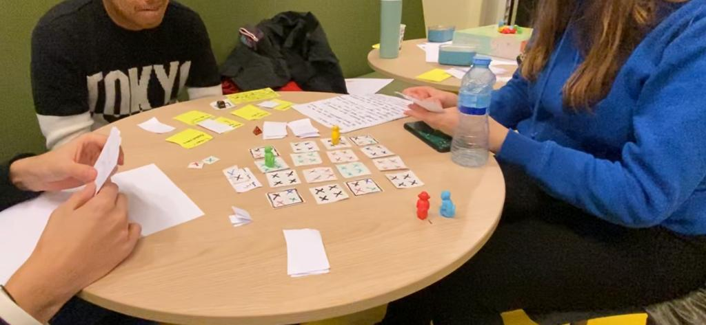

A assignment given to us was to make a board game made with bomber man as inspiration. My team eventually came up with “tempel van gevaren” translated to: Temple of dangers. In this game you would each turn: draw one card, play one card and move your pawn one space to the left, right, front or back.
In the game there are 4 kinds of traps, the current trap that is active is shown on a dice (green are snakes, yellow are scorpions, red is fire and purple is poison).
One of the players is the trap master, every play round you move a counter from 4 to 3, from 3 to 2, etc. When the timer hits 0 the traps open up and everyone on a trap that is active loses.
On the cards that you play you would find a text which explains what you must do if you play that card. Some examples are: Switch one tile with a surrounding tile, block a tile, extra trap, enz.
